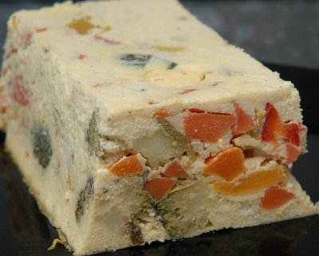

| Zutaten für 4 Personen: | |
| 600 g | verschiedene Gemüse |
| 25 g | Butter |
| Pfeffer aus der Mühle | |
| Muskatnuss | |
| Kräutersalz | |
| Paprika | |
| 350 g | Halbfettquark |
| 4 | Eier |
| 150 g | geriebener Sbrinz |
| Butter für die Form | |
| 1 Bund | Schnittlauch |
Gemüse in kleine Stücke schneiden. In Butter 5 bis 10 Minuten unter ständigem Wenden garen. Dabei zuerst die festen Gemüse wie zum Beispiel Rüebli garen und die anderen erst nach und nach dazugeben. Gemüse würzen und etwas auskühlen lassen.
Dann mit Quark, Eiern und Reibkäse mischen. Form ausbuttern und die Gemüse-Quark-Masse einfüllen. Form mehrmals auf den Tisch klopfen, damit keine Hohlräume entstehen.
Terrine in ein Wasserbad stellen und im Ofen bei rund 180°C etwa 1 Stunde garen. Zum Servieren die Terrine in Scheiben schneiden und mit Schnittlauchröllchen garnieren.
Eine Zeitung
Nun, gelang eigentlich recht gut, dafür, dass das eine meiner ersten Terrinen ist. Allerdings schmeckt mir das Resultat ziemlich langweilig und erntet bloss 2 Sterne. RE 29.4.2008
@LINKBACK_TAG@ @WAKELOCK@